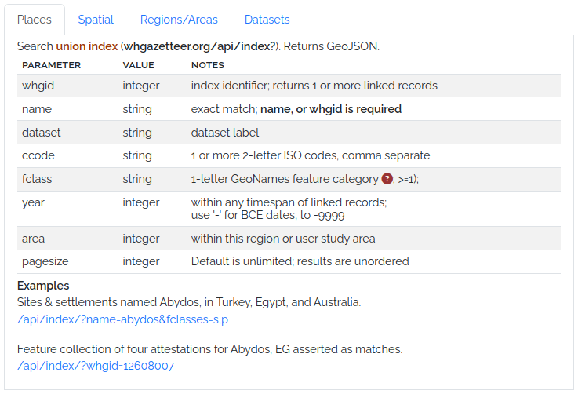
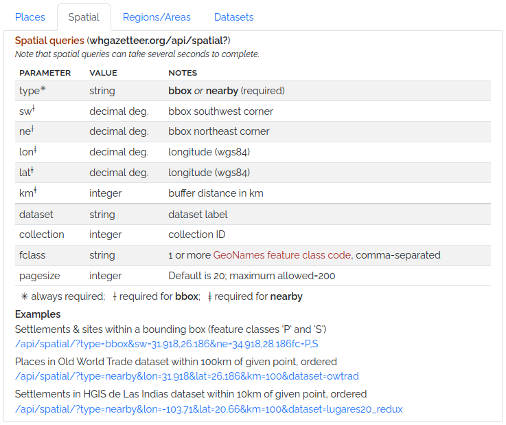

Technical¶
API¶
Development of a more complete and well-documented public API is in progress. We are refining options and adding endpoints in response to community feedback. Our intention is eventually to offer a Swagger interface like the ( unrelated!) example here.
In the meantime, the endpoints illustrated here are available for use, but are liable to change without notice.




Code Repositories¶
The WHG codebase is divided into several GitHub repositories, each with a specific focus:
WHG PLACE (Place Linkage, Alignment, and Concordance Engine)
This repository contains the Kubernetes server configuration files for deploying and managing the World Historical Gazetteer (WHG) application. It provides a dedicated space for configuring and orchestrating the server environment.
This repository contains the codebase for the WHG v3.0b application. It is a Django-based web application that provides a user interface for uploading, reconciling, and publishing historical gazetteer data.
This repository contains the codebase for generation and serving of map tiles for the WHG application. Its functionality will soon be integrated into the WHG PLACE repository.
Issues & Discussions¶
We welcome feedback, bug reports, and feature requests. Please use the GitHub Issues feature in the appropriate repository. We especially welcome contributions to the current Discussions.